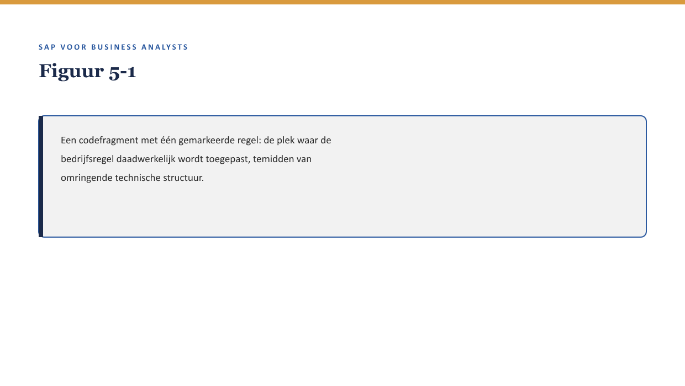
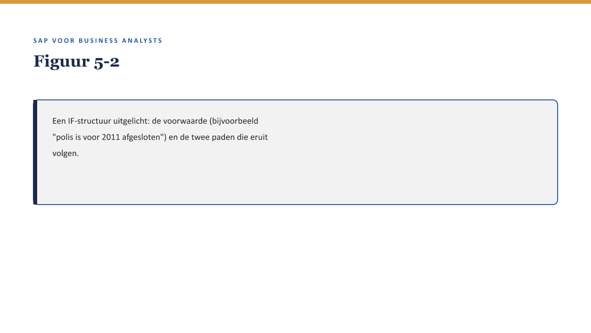

Deel 5 — ABAP lezen voor BA’s
Slidedeck · Niveau 1 Fundamenten · Cursus SAP voor Business Analysts · Ductus
Slidetypen conform de Ductus-sjabloonfuncties: titleSlide, sectionSlide, bulletsSlide, statementSlide, quoteSlide, tableSlide, figureSlide, opdrachtSlide.
Slide 1 — titleSlide
ABAP lezen voor BA’s Deel 5 · Niveau 1 Fundamenten Cursus SAP voor Business Analysts
Slide 2 — statementSlide
Aan het eind van vandaag kun jij geen ABAP schrijven.
Dat is precies de bedoeling.
Slide 3 — bulletsSlide
Wat we vandaag doen
- Jelle’s scherm — één regel die telt, tussen tientallen die dat niet doen
- Vier bouwstenen: variabele, conditie, lus, functieaanroep
- Configuratie versus custom code — waar een regel woont
- Lezen versus beoordelen — en waarom “ik snap dit niet” bruikbaar is
Slide 4 — figureSlide

Slide 5 — quoteSlide
“Dat hoeft ook niet. Ik wil dat je één ding ziet: hier, deze regel — dit is waar de uitzondering wordt toegepast. De rest is boekhouding voor de computer.”
— Jelle Bakker
Slide 6 — sectionSlide
Vier bouwstenen
Slide 7 — tableSlide
Wat je herkent
| Bouwsteen | Wat het betekent |
|---|---|
| Variabele | een waarde wordt vastgehouden |
| Conditie (IF) | een keuze wordt gemaakt — vaak dé bedrijfsregel |
| Lus (LOOP) | iets herhaalt zich voor elk item in een lijst |
| Functieaanroep | logica wordt hergebruikt, elders gedefinieerd |
Slide 8 — opdrachtSlide
Opdracht 5.1 — Bouwstenen herkennen
voor elke polis van deze werkgever:
als polis is afgesloten vóór 1 januari 2011:
pas historische korting toe
anders:
pas standaard korting toe
bewaar het resultaat in "berekende_premie"
Wijs lus, conditie en variabele aan.
Slide 9 — figureSlide

Slide 10 — sectionSlide
Configuratie versus custom code
Slide 11 — figureSlide

Slide 12 — quoteSlide
Een bedrijfsregel die alleen in custom code leeft, is een regel die de organisatie is vergeten dat ze heeft — tot iemand toevallig de code opent.
— Kernzin, reader §4.2
Slide 13 — opdrachtSlide
Opdracht 5.3 — Configuratie of custom code?
Drie bedrijfsregels — waar verwacht je ze? a. Een standaardkorting per producttype b. Een eenmalige uitzondering voor één kwartaal, één jaar c. Verplichte velden bij een nieuwe polis
Slide 14 — sectionSlide
Lezen versus beoordelen
Slide 15 — statementSlide
“Deze conditie checkt of de polis vóór 2011 is afgesloten.”
Klopt dat — met wat er werkelijk staat?
Slide 16 — opdrachtSlide
Opdracht 5.4 — Lezen versus beoordelen
De uitleg zegt één ding, de conditie doet iets anders (systeemjaar in plaats van afsluitdatum). a. Leesprobleem of beoordelingsprobleem? b. Wat doe je nu?
Slide 17 — quoteSlide
Een ontwikkelaar kan verifiëren dat de code doet wat er staat. Alleen jij, met je domeinkennis, kunt verifiëren dat wat er staat, ook is wat er bedoeld werd.
— Kernzin, reader §5.2
Slide 18 — bulletsSlide
“Ik snap dit niet” — bruikbaar, mits gevolgd door
- Het specifieke fragment of de conditie aanwijzen
- De aanname die erin zit benoemen
- Doorvragen, niet meteen concluderen dat het fout is
Slide 19 — opdrachtSlide
Opdracht 5.5 — Terug naar Jelle’s scherm
Formuleer Sannes vraag aan Jelle: welke conditie, welke aanname, welke verwachting versus wat je ziet.
Slide 20 — bulletsSlide
Samenvatting in vijf zinnen
- Vier bouwstenen zijn genoeg: variabele, conditie, lus, functieaanroep
- Een conditie is bijna altijd waar een bedrijfsregel woont
- Custom code is minder zichtbaar en wendbaar dan configuratie — makkelijker om te “vergeten”
- Lezen (volgen) en beoordelen (toetsen aan de bedoeling) zijn twee aparte stappen
- “Ik snap dit niet” is het begin van een goede vraag, niet het einde van het gesprek
Slide 21 — titleSlide
Volgende deel Business logica & uitbreidingen Deel 6